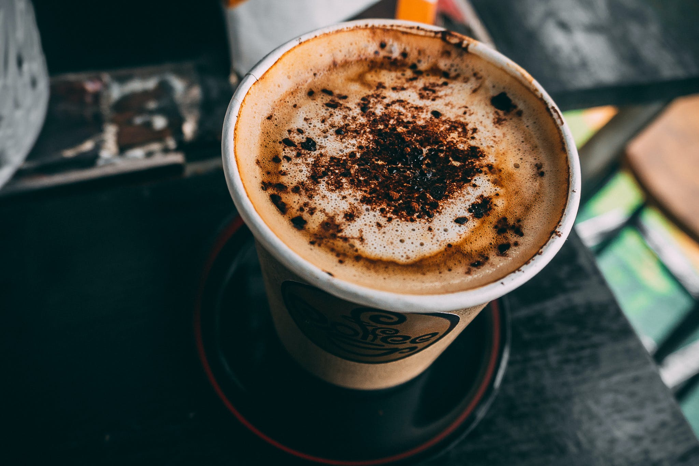

Наши напитки из кофе
Капучино

Кофейный напиток на основе эспрессо с добавлением молочной пены. Капучино состоит из трех ингредиентов, смешиваемых в одинаковых пропорциях: на 1/3 эспрессо приходится столько же горячего молока и молочной пены. Все составляющие напитка должны быть высокой температуры и подаваться в теплой кружке объемом 150-180 мл. Калорийность: 105 ккал
Латте
Это скорее не кофейный, а молочный напиток, так как его основу составляет горячее молоко (на одну часть эспрессо три части молока). Латте состоит из трех слоев и подается в высоком прозрачном стакане, чтобы можно было увидеть все три полоски молока, молочной пенки и кофе.Калорийность: 112ккал
Эспрессо

Подается в небольших чашечках (30-35 мл) и традиционно считается самым крепким из кофейных напитков, в то время как на самом деле является одним из самых щадящих желудок и сердце. В процессе приготовления он теряет довольно много кофеина, при этом приобретая богатый вкусовой и ароматический букет.Калорийность: 7 ккал (калорийность всех напитков указана без учета добавления сахара)
Капучино

Кофейный напиток с добавлением шоколада в традиционный латте, также известный под названием «мокко». Готовится так же, как и латте, за исключением того, что в последний момент в напиток вмешивается какао-порошок или же шоколадный сироп.Калорийность: 289 ккал
Латте

Кофейный напиток, состоящий из несильно вспененного молока и двойной порции эспрессо. На 110 мл молока приходится примерно 60 мл кофе. От латте или капучино он отличается более выраженным кофейным вкусом с присущей горчинкой и мягким молочным послевкусием.Калорийность: 50 ккал
Эспрессо

Холодный кофейный напиток, состоящий из кофе (двойной эспрессо) и молока (около 100 мл). Все компоненты должны быть холодными и взбитыми в шейкере или миксере до однородной смеси. Также часто в качестве основного ингредиента добавляют мороженое. При подаче в фраппе добавляют колотый лед и сиропы.Калорийность: 60 ккал (без мороженого)